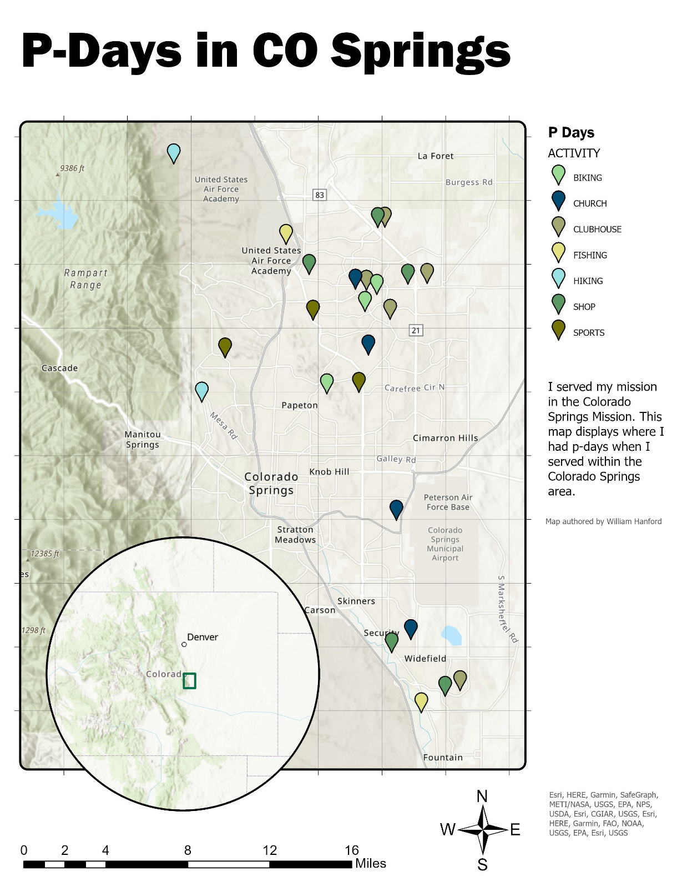
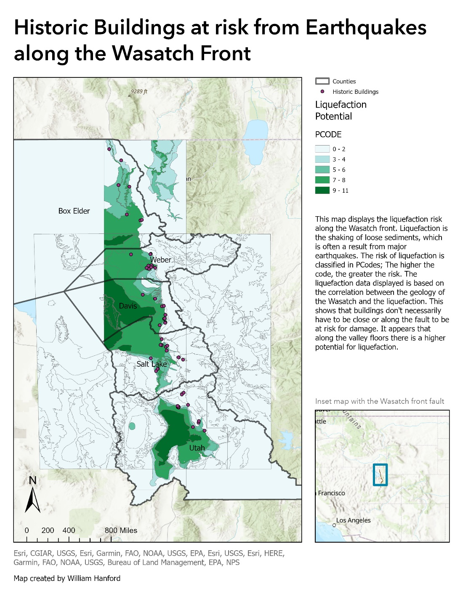
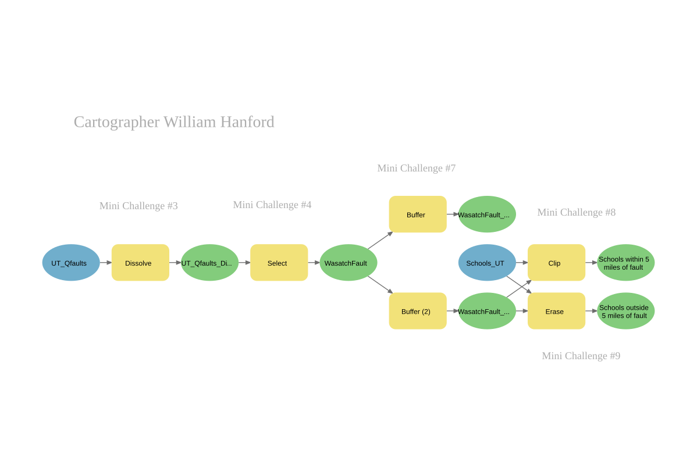
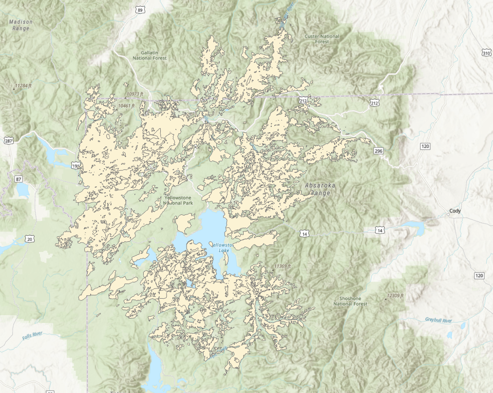
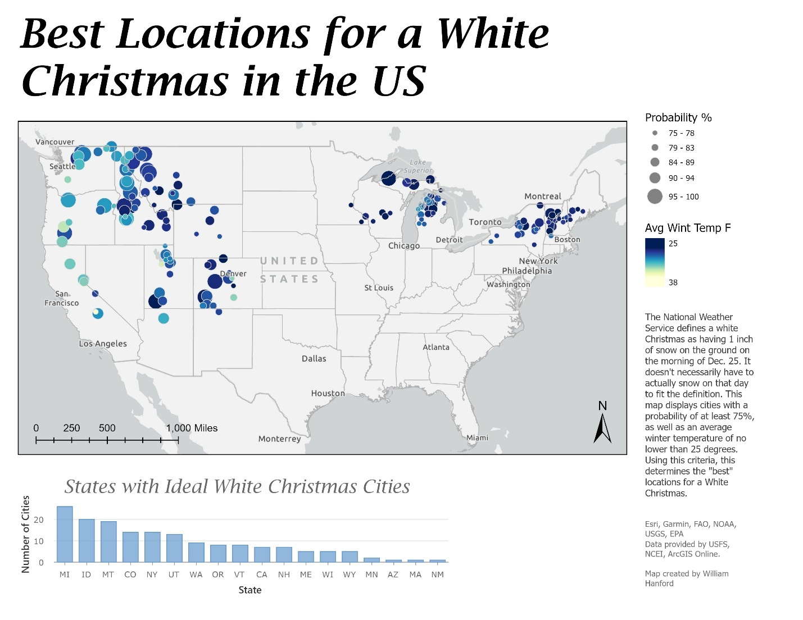

GIS Coursework
Spatial analysis projects from two college GIS courses — an intro course and a follow-up focused on social science applications.
Intro to GIS
 Heber Valley Girls Camp
Heber Valley Girls Camp

Hometown Map Classifying & Symbolizing Data
Classifying & Symbolizing Data
 Hurricane Ian
Hurricane Ian

Utah Earthquake Faults
Suitability Modeling
Yellowstone Coordinate Systems Bears Ears Georeferencing
Bears Ears Georeferencing
 Teton Pass Avalanche Risk
Teton Pass Avalanche Risk

White Christmas Final Project